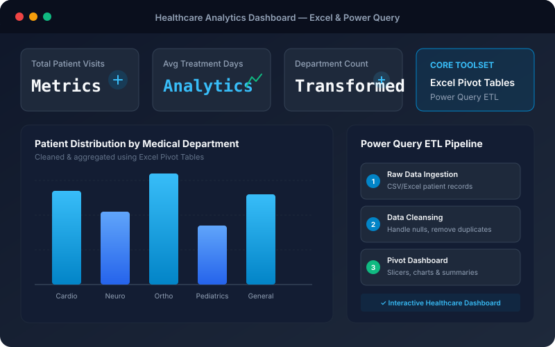

Dashboard Preview

assets/images/
1. Project Overview & Objective
Healthcare facilities require clear visibility into their daily patient records, treatment durations, and departmental resource allocations. Raw hospital datasets often contain missing values, inconsistent date formats, and fragmented tables that make decision-making slow.
2. Data Cleaning & Power Query Pipeline
Power Query was utilized as the primary ETL (Extract, Transform, Load) engine to ensure data integrity before reporting:
- Data Validation & Profiling: Checked column quality, identified null values, and standardized date, numeric, and text field formats.
- Handling Inconsistencies: Trimmed excess whitespace, removed duplicate entries, and normalized inconsistent medical department names.
- Custom Calculated Columns: Created calculated columns for treatment duration and categorical age brackets to simplify demographic analysis.
3. Dashboard Design & Pivot Table Architecture
The reporting interface was built with connected Pivot Tables, dynamic charts, and interactive slicers:
1. Power Query ETL:
- Data Source Ingestion → Type Conversions → Duplicate Removal
- Output loaded cleanly into Excel Data Model / Structured Tables
2. Excel Formulas & Aggregations:
- AVERAGEIFS / COUNTIFS for benchmark metrics
- DATEDIFF / INT date differences for patient length of stay
3. Interactive Pivot Tables:
- Department-wise Patient Distribution (Bar Chart)
- Treatment Duration Benchmarks across Categories (Column Chart)
- Timeline Slicers allowing dynamic filtering by Month, Quarter, and Ward4. Key Findings & Visual Insights
Summary of analytical observations derived from the interactive dashboard:
Department Distribution
[Insert your finding: e.g., Visualized patient distribution across departments, identifying wards with the highest consultation volumes.]
Treatment Length Variation
[Insert your finding: e.g., Evaluated stay durations by diagnosis to identify treatment categories requiring extended monitoring.]
Monthly Trends
[Insert your finding: e.g., Uncovered seasonal patient inflow patterns using interactive timeline slicers.]
5. Analytical Takeaways
- Process Automation: Power Query query steps allow future monthly patient records to be refreshed with a single click.
- Resource Planning: [Insert recommendation: e.g., Staff allocation can be aligned with departments experiencing high patient traffic.]
- Standardized Records: Data entry guidelines prevent formatting errors and missing timestamps at initial intake.